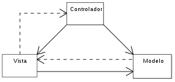
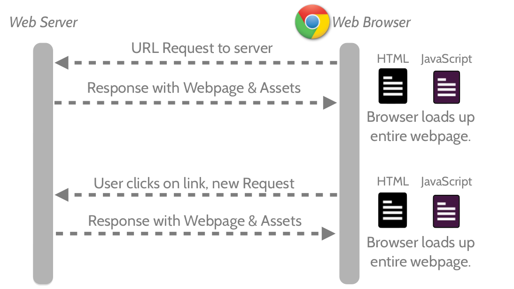
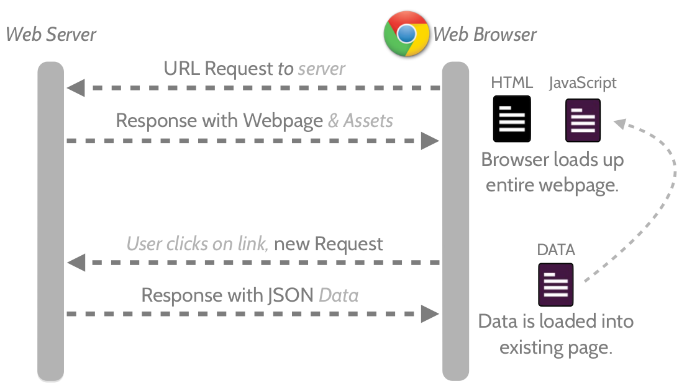
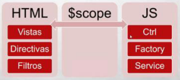

Establecimiento: EducacionIT
Autor Facundo E. Beltramo / @febefx
Sobre mi:
··· técnico electrónico · capacitador · full app developer ···
Actualmente:
- Desarollador web, front-end/back-end, en sinaptica.io.
- Desarrollador freelance.
- Capacitador en EducaciónIT.
- Estudiante UNR.
Contacto:
fexbef@gmail.com / fb@sinaptica.io ~ @febef
Sobre el curso:
_Cómo se compone una clase:
- Teoría.
- Uno o dos ejemplos.
- Práctica/Laboratorio.
- Exámen.
En esta calase veremos:
- Introducción a AngularJS
- Modulos
- Expresiones
- Directivas
- Controladores
Introducción:

Qué es?
AngularJS es un framework de JavaScript de código abierto, mantenido e impulsado por la gente de Google desde sus comiensos alla por el 2009...
Esta basado en la arquitectura MVC y nos encamina a realizar aplicaciones de tipo SPA.
De esta manera se facilita la creación de tests para nuestras aplicaciones, pero eso es algo que escapa de éste curso.
MVC |
 |
Esto nos ayuda a la reutilización de código facilitando la tarea de desarrollo de aplicaciones y su posterior mantenimiento.
Se trata de una aplicación web que se ejecuta en una única página, logrando así una experiencia de usuario más cercana a una aplicación de escritorio.
Las SPA surgieron de la necesidad de mejorar la experiencia de usuario, no más navegar por un por un engorroso sistema de enlaces.
Estas realizan peticiones asíncronas al servidor en las que solo se trasmite la minima cantidad de informacion posible y luego se actualiza una porcirón de la página segun corresponda.
Página web Comun
Página SPA
Framework
La palabra inglesa "framework" (marco de trabajo) define, en términos generales, un conjunto estandarizado de conceptos, prácticas y criterios para enfocar un tipo de problemática particular que sirve como referencia, para enfrentar y resolver nuevos problemas de índole similar.
MVC en AngularSJ
-
Vistas > Será el HTML y todo lo que represente datos o información.
-
Controladores > Se encargarán de la lógica de la aplicación y sobre todo de las
llamadas "Factorías" y "Servicios" para mover datos contra servidores o memoria
local en HTML5.
- Modelo de la vista > En Angular el "Modelo" es algo más que el modelo de datos. Toda esa información, que es útil para el programador pero que no forma parte del modelo del negocio, es a lo que llamamos el "scope" que es el modelo en Angular.
Que nos ofrece Angular?
Angular nos probee una serie de Herramientas y librerias útiles para el desarrollo de aplicaciones web.Dos características fundamentales de AngularJS
- Client-side template El sistema de plantillas en AngularJS es diferente del utilizado en otros frameworks. Por lo general, es el servidor el encargado de mezclar la plantilla con los datos y devolver el resultado al navegador. En AngularJS el servidor proporciona los contenidos estáticos (plantillas/vistas) y la información que se va a representar (modelo) y es el cliente el encargado de mezclar la información del modelo con la plantilla para generar la vista.
- Data binding Con AngularJS podemos sincronizar el modelo y la vista automáticamente utilizando ciertas directives del framework. Esta sincronización es bidireccional, es decir, la información se sincroniza tanto si cambia el valor en la vista como si lo hace el valor en el modelo.
Módulos/Dependencias
Siempre nos manejaremos con módulos, que vendrian hacer algo asi como nombre de espacios(namespaces), al crear una aplicación se genera un módulo principal.AngualrJS tambíen nos brinda funcionalidades muy útiles las cuales declara en sus propios módulos. Para poder usar éstas funcionalidades debemos incluirlas al módulo que la usaremos. Dentro de los módulos éstas funcionalidades son encapsuladas en servicios.
En general...
En AngularJS, si todo esta bien hecho, no deberíamos encontrar código JavaScript en las vistas (archivos html) ni código HTML en los modelos y controladores (archivos js).
Como se ve en la imagen existen componentes como las Directivas, Expresiones y Filtros son agregados a HTML de parte de AngularJS, que nos van a alegar el maquetado de las visatas. Por otro lado tenemos los Controladores, las Fabricas, Servicios y los Proveedores.
Directives
Las Directivas son uno de los pies fundamentales de AngularJS, éstas extienden el lenguaje html dándole el comportamiento que deseemos. AngularJS posee un conjunto de Directivas, de las cuales ya vamos a hacer uso, tambíen nos brinda la posibilidad de crear las nuestras. Las Directivas se pueden presentar en forma de atributo de un elemento html o como un nuevo elemento html.Ejemplo de uso de las Directivas 'ng-controller' y 'ng-show':
Todo MAL!
Expressions
Las Expreciones de AngularJS son como expreciones de JavaScript pero restringidas. Podemos hacer uso de ellas en cualquier parte de las vistas siempre y cuando esté dentro de algún scope. Las declararemos con llaves dobles: {{expresión}}.- Contexto: Las expreciones son evaluadas contra un objeto scope.
- Errores: Si una expreción está indefinida y/o genera un error, en JavaScript se genera un 'ReferenceError' en cambio en las expreciones de AngularJS si no son válidas no se toman en cuentai, se pasan de largo.
- No Tenemos: Control de flujo, declaración de funciones ni expreciones regulares.
- Filtros: Por otro lado tenemos filtros!. Para ejecutar código JavaScript más complejo hacerlo en un metodo de un controlador.
Filters
Los filtros nos permiten modificar el modo en el que se va a presentar la información al usuario. La utilización de los mismos es similar a las tuberias de Unix y tambíen se pueden encadenar varios de ellos:
{{ expresión | filtro1:argumento | filtro2:argumento1:argumento2 | filtro3 }}
Services
Los Servicios son los encargados de comunicarse con el servidor para enviar y obtener información que después será tratada por los controladores para mostrarla en las vistas.Esta parte es más compleja de explicar con un ejemplo, por el momento nos basta con saber que los services se pueden dividir en tres categorías: services, factories y providers.
Uno de los Servicios incluidos en el framework es $resource, el cual nos permite encapsular la interacción con servicios RESTful sin tener que tratar directamente con las llamadas http.
Factories
Las fábricas, son la forma que tenemos de encapsular funcionalidades concretas par poder usarlas en nuestros proyectos. Ya vamos a ver ejemplos prácticos de ellas más adelante.Manos a la obra
Para crear una aplicación es necesario incluir, por supuesto, la libreria AngularJS y al menos una directiva ('ng-app') la cual generara el scope raiz, necesario para hacer cualquier cosa:
<!doctype html>
<html>
<head>
<title>AngularJS</title>
<script type="text/javascript" src="angular.min.js"></script>
</head>
<body ng-app>
<h2> Hola Mundo!</h2>
</body>
</html>
Probando expresiones y la directiva 'ng-model'
<!doctype html>
<html>
<head>
<title>AngularJS</title>
<script type="text/javascript" src="angular.min.js"></script>
</head>
<body ng-app>
<input type="text" placeholder="ingresa tu nombre" ng-model="name">
<h2> Hola {{name}}!</h2>
</body>
</html>
Primer controlador + ng-checked
index.html
<body ng-app="miap">
<h1>Tarea</h1>
<div ng-controller="CtrlTarea as tarea">
<h3><input type="checkbox" ng-checked="{{tarea.hecho}}"> {{tarea.nombre}}</h3>
<span>{{tarea.descripcion}}</span>
</div>
<script src="angular.js"></script>
<script src="app.js"></script>
</body>
var unaTarea = { nombre: "Cocinar", hecho: false, descripcion: "Algo rico..."};
angular.module('miap', [])
.controller('CtrlTarea', function() {
var vm = this;
vm.nombre = unaTarea.nombre;
vm.descripcion = unaTarea.descripcion;
vm.hecho = unaTarea.hecho;
});
Podemos ver éste ejemplo en el siguiente link: http://plnkr.co/edit/7FDVZGukB6wwLBVu7sM4?p=preview